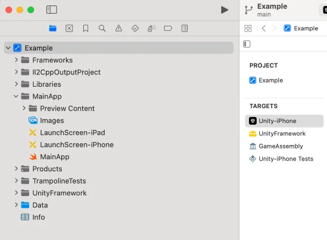
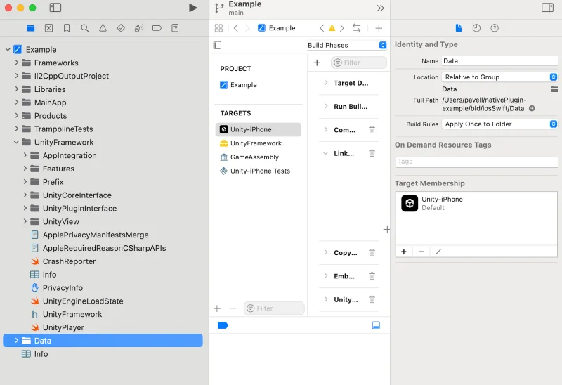

When you build a Unity Xcode Swift project for the iOS platform, Unity creates a folder that contains an Xcode project. You need to build and sign this project before you deploy it on a device or distribute it on the App Store.
Note: Use the Xcode project type Player setting to build an Objective-C or Swift Xcode project type. For information on the structure of a Unity Xcode project built with Objective-C, refer to Structure of a Unity Xcode Objective-C project type.
Every generated Unity iOS Xcode Swift project has the following structure and targets:

Note: This image is for reference purposes only. Your project structure might look different to this example image depending on the version of Unity you’re using. Refer to Project structure for information on the project structure elements that remain unchanged across different versions.
Note: A Unity Swift application is initialized from the MainApp/MainApp.swift file.
The Xcode project includes both the .xcodeproj project file and framework links that only appear in the Xcode project navigator. Apart from the default folders, you can create custom folders to add custom files as required.
For projects that use Swift, Unity generates the .xcodeproj file name from your Unity project name. It sanitizes the name by removing spaces, symbols, and other non-alphanumeric characters.
You can use PBXProject.GetPBXProjectPath to return the xcodeproj file path rather than using a hardcoded file name.
Note: To modify a generated Xcode project, use Xcode.PBXProject.
A Unity Xcode Swift project contains the following targets:
| Target | Description |
|---|---|
| Unity-iPhone | A thin launcher part that runs the UnityFramework. It includes the MainApp folder and app representation data such as Launch Screens, .xib files, icons, data, and Info.plist files. The Unity-iPhone target has a single dependency on the UnityFramework target. Note: UnityFramework.framework is linked with the main binary unlike an Objective-C project type. |
| UnityFramework | The target that produces the UnityFramework.framework bundle. It includes the Unity runtime, Classes, UnityFramework, and Libraries folders, along with dependent frameworks. The UnityFramework folder includes a privacy manifest file (PrivacyInfo.xcprivacy), a consolidated privacy manifest file for the Unity runtime, Unity plug-ins, packages, and your project. |
| GameAssembly | A container for your C# code translated as C++ code. To build it, Xcode uses the IL2CPP tool that Unity includes in every generated Xcode project. The build produces:
|
Note: Use PBXProject.GetUnityFrameworkTargetGuid() to get the UnityFramework target GUID and PBXProject.GetUnityMainTargetGuid() to get the Unity-iPhone target GUID.
When developing a Swift project type, Unity guarantees that certain parts of the generated Xcode project will remain the same during development. The following files and folders will be treated as a public API and will follow a standard deprecation process when any changes are made. For more information, refer to Swift project type API reference.
This folder contains your application’s serialized assets and .NET .dat files. The machine.config file sets up various .NET services such as Security and WebRequest. By default, the Data folder’s Target Membership is the Unity-iPhone target, and Unity runtime searches for it in the mainBundle.
Note: The contents of this folder are refreshed with every build. You shouldn’t make any changes to it.
Note: On-Demand Resources are only supported when the Data folder is a part of the Application target and not a part of the UnityFramework target.

Note: This image is for reference purposes only. Your project structure might look different to this example image depending on the version of Xcode you’re using. Refer to Project structure for information on the project structure elements that will remain unchanged across different versions.
The Frameworks folder contains UnityRuntime.framework, the Unity Runtime static frameworks library for device and simulator.
The contents of the Libraries folder are refreshed with every build. You shouldn’t make any changes to it.
Icons and splash screens (.png files) are located in asset catalogs in the MainApp folder. Unity automatically manages these files. Launch screens, their XML Interface Builders (.xib files), and Storyboard files are also stored in the MainApp folder. You can configure these files in the Player settings window (menu: Edit > Project Settings > Player). Make sure the custom launch images that you create adhere to Apple’s Human Interface Guidelines.
You can manage the Info.plist file within the Unity-iPhone target (accessed via mainBundle) from Unity’s Player settings window (menu: Edit > Project Settings > Player > Other Settings > Identification). Unity updates this file rather than replacing it while building the Player. Don’t make changes to it unless you need to.
The /UnityFramework/Info.plist file, accessed via bundleWithIdentifier:@"com.unity3d.framework", is a part of UnityFramework. You can keep project specific values in this file instead of the Info.plist file of the mainBundle. This makes sure that you can still get these values if UnityFramework is moved into another application, for example, when using Unity as a Library.
Note: You can also manage the Info.plist file using the PlistDocument API. For more information, refer to PlistDocument.